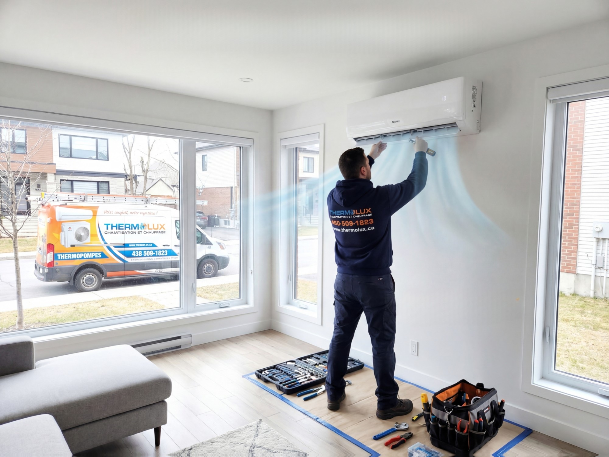

Questions fréquentes
Choix du système, installation, subventions, entretien et garantie : l’essentiel en quelques lignes.
Choix du système
Comment choisir le bon système pour ma maison ?
Le choix dépend de la superficie, de l’isolation, de la disposition des pièces, de la hauteur des plafonds et de vos besoins de chauffage en hiver. Nous faisons une évaluation pour vous recommander le meilleur système : mural, multizone ou central.
Combien de BTU ai-je besoin ?
Cela dépend de :
- la superficie et la hauteur des plafonds ;
- la qualité de l’isolation ;
- l’orientation (ensoleillement) ;
- la configuration des pièces.
Un bon dimensionnement est essentiel pour le confort et l’efficacité.
Quelle est la différence entre un système mural et un système central ?
Murale (mini-split) : idéale pour des zones précises ou une maison sans conduits.
Centrale : distribue l’air dans toute la maison par les conduits.
Quels sont les meilleurs systèmes pour le climat du Québec ?
Nous recommandons des systèmes conçus pour bien performer par temps froid, très efficaces et bien garantis. Le choix dépend de votre budget et des subventions disponibles. Nous travaillons avec plusieurs marques : GREE, Zephyr, Canair, Elios, RunTru, Arcoair, Directair, Ameristar et Lennox.
Un système de chauffage et de climatisation fonctionne-t-il bien en hiver ?
Oui. Les systèmes modernes, bien choisis et bien installées, fonctionnent efficacement même pendant les hivers québécois.
Peut-on remplacer un ancien système ou un climatiseur ?
Oui. Nos techniciens retirent l’ancien équipement de façon professionnelle, puis installent le nouveau système, proprement et selon les normes.
Puis-je installer un système dans un condo ou un duplex ?
Oui, selon les règlements du bâtiment et l’espace disponible. Nous analysons votre projet pour proposer une solution conforme et efficace.
Installation et planification
Comment se déroule une installation avec Thermolux ?
- Évaluation
- Recommandation du système
- Soumission claire
- Installation professionnelle
- Tests et explications
Thermolux détient-elle les permis nécessaires ?
Oui. Thermolux détient les licences requises pour installer des systèmes de chauffage, et de climatisation au Québec. Licence RBQ : 5812-9388-01.
Les techniciens sont-ils qualifiés et certifiés ?
Oui. Nos techniciens sont formés en CVAC et en réfrigération, et possèdent les certifications nécessaires pour ces travaux.
Pourquoi choisir un entrepreneur titulaire d’une licence RBQ ?
- Conformité aux règlements du Québec
- Garanties valides du fabricant et de la main-d’œuvre
- Admissibilité aux aides gouvernementales comme LogisVert
- Protection du consommateur
Combien de temps prend l’installation ?
Cela dépend de l’équipement et de la complexité du projet. Un système mural standard peut souvent être installée en une journée. Un système plus complexe ou central demande plus de temps.
Où seront installées les unités intérieures et extérieures ?
Nous choisissons les emplacements selon la circulation de l’air, l’efficacité, l’esthétique et l’accessibilité, pour une performance durable.
Quelles régions desservez-vous ?
Montréal, Saint-Laurent, Laval, Longueuil, Brossard, Terrebonne, Blainville, Repentigny, Saint-Eustache, la Rive-Nord et la Rive-Sud.
Prix, subventions et économies
Combien coûte un système de climatisation et de chauffage ?
Le prix dépend de la capacité (BTU), du nombre de zones, de la complexité de l’installation, des travaux électriques, de la marque et de l’efficacité. Nous fournissons des soumissions détaillées et transparentes.
Y a-t-il des subventions disponibles ?
Oui. Des programmes comme LogisVert peuvent s’appliquer selon votre admissibilité et le système choisi. L’admissibilité se vérifie auprès d’Hydro-Québec. Voir la page subventions
Aidez-vous avec les démarches de subvention ?
Oui. Nous vous aidons à choisir des systèmes admissibles et à comprendre les démarches.
Combien puis-je économiser ?
Un système efficace peut réduire vos coûts d’énergie par rapport à des systèmes plus anciens. Le résultat dépend de votre maison et de votre système actuel.
Un système efficace est-il un bon investissement ?
- Confort été comme hiver
- Économies d’énergie
- Valeur ajoutée à la propriété
Entretien et dépannage
Offrez-vous la réparation de systèmes de chauffage et de climatisation ?
Oui : diagnostic, réparation, dépannage et optimisation des performances.
À quelle fréquence faut-il faire l’entretien ?
Au minimum une fois par année. L’entretien prolonge la durée de vie du système et améliore son efficacité.
Pourquoi mon système ne chauffe pas ou ne refroidit pas bien ?
Causes possibles :
- filtres sales ;
- mauvais réglages ;
- manque d’entretien ;
- mauvais dimensionnement ;
- problème technique.
Pourquoi mon système coule ou fait du bruit ?
Cela peut venir du drainage, de l’installation ou d’un composant. Une inspection est recommandée.
Offrez-vous un service rapide ?
Oui, selon la disponibilité et l’urgence.
Comment prolonger la durée de vie de mon système ?
Entretien régulier, bonne utilisation, nettoyage des filtres et service professionnel.
Garantie et financement
Quelle garantie offrez-vous ?
Plusieurs systèmes incluent une garantie 10-10-10 (pièces, compresseur, main-d’œuvre) ou 12-12-10. Certaines conditions s’appliquent.
Offrez-vous du support après l’installation ?
Oui, c’est l’un de nos plus grands avantages : un support après-vente solide pour assurer le bon fonctionnement de votre système.
Qu’est-ce qui peut annuler la garantie ?
La garantie peut être affectée si le système est déplacé ou modifié sans autorisation, ou en cas d’entretien inadéquat ou de mauvaise utilisation.
Offrez-vous du financement ?
Selon les projets et les conditions, des options peuvent être disponibles. Contactez-nous pour plus d’informations.
Un travail propre, une équipe courtoise

Licence RBQ 5812-9388-01Entrepreneur certifié par la Régie du bâtiment du Québec
Techniciens certifiés
Installation et entretien par des professionnels licenciés.
Garantie fabricant et main-d’œuvre
Votre installation est protégée.
Service fiable et professionnel
Une équipe locale, de la soumission à l’entretien.
Aide pour la subvention LogisVert
Nous vous accompagnons dans les démarches.